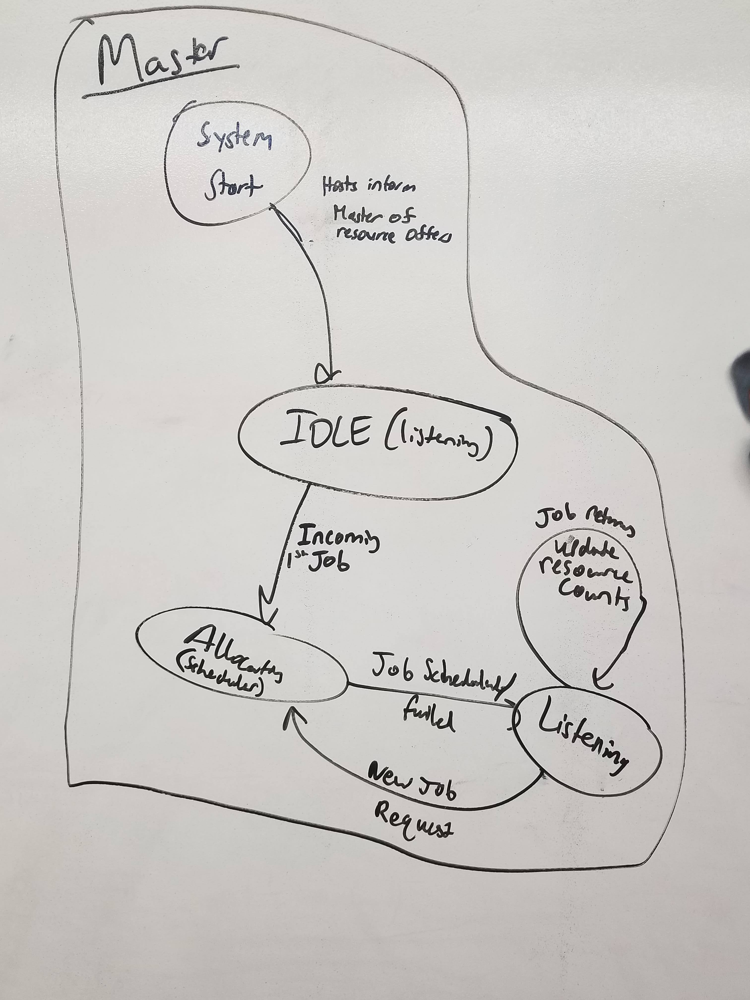
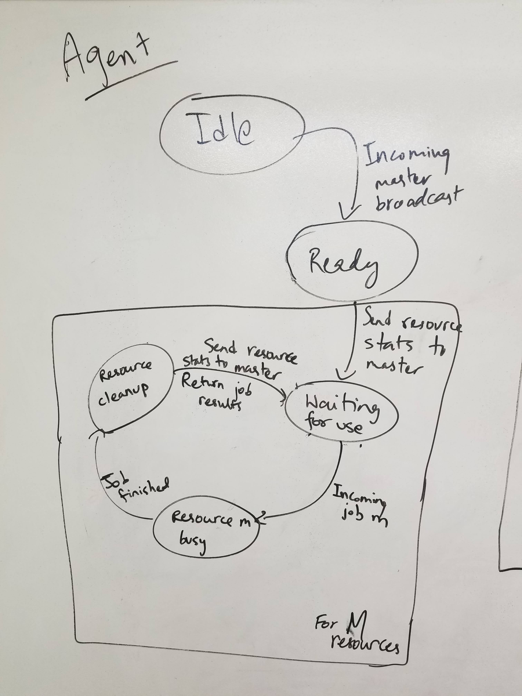

Checkpoint 1
General Updates Since Project Proposal
Based on the professor’s feedback on our project proposal, we spent a considerable amount of time determining more explicit details of what our system will look like. We are targeting the competing goals of maintaining both realism and feasibility of implementation within the project timeframes. We elected to implement a simulated version of the Mesos platform to serve requests from various frameworks.
For the sake of pushing the project forward, we decided to first implement a bare-bones version of the system with a single, unreplicated master and hand-created job types. Worker agents will be represented by threads with their own resources that we hand-pick to simulate a realistic environment. In turn, we plan to generalize this initial setup to increasingly realistic implementations (e.g. representing worker agents by individual processes and communicating via RPCs, calling Spark/mySQL/other frameworks rather than simulating calls, correspondingly complex and robust scheduling algorithms -- both our baseline DRF and SJF implementations and our ML-based SJF implementation).
We are nearly done with the single-master implementation of Mesos. Our progress (including a description of our research/planning efforts) is detailed below.
Current Status
We analyzed the working of Mesos. The master node determines how many resources to offer to each framework. In here,
- The agents will inform the mesos master of the resources it contains
- The Mesos Master will send a resource offer to framework 1.
- Framework will decide which resources to utilize using tasks
- Master sends tasks to agents.
Since we are working with individual jobs for this checkpoint instead of frameworks, steps 2 + 3 are redundant. Instead, the Mesos Master itself acts as the framework scheduler for the individual jobs, denying jobs that can’t be served. In order to satisfy the constraints of a framework, the framework themselves would usually have the ability to deny resource offers. Instead, the master node takes on this task.
For our own understanding and for presentation purposes, we drew finite state diagrams for our implementation of the Mesos master and agent (host) nodes. These figures are provided below.
A model of the Mesos master has been implemented and can be found in the “single-node” repository of our github organization (see link below).
We looked into simulating and integrating jobs calls from different frameworks like Spark, MapReduce and nginx. This helped decide features for our simulated jobs. This serves as a sanity check as to whether our architecture can support real-life processes and will be generalized and made more realistic in future checkpoints.
We have decided various properties for each job that will help our algorithm make good predictions. These are in tune with attributes related to Apache Spark and nginx processes. Presently, we categorise jobs into 4 basic types - web-based jobs, machine learning jobs, database jobs and indexing jobs. Each of these have distinct characteristics which affect the performance of scheduling algorithms. For use in the algorithm, values of these characteristics are generated by sampling from a Gaussian distribution.
We have considered a variety of existing scheduling algorithms to compare our approach to. As baselines, we chose to implement bare-bones (in that they are compatible with the simplified jobs and users we’ve implemented in this checkpoint) versions of Shortest Job First and Dominant Resource Fairness. Ultimately we intend to measure the throughput of our system over a long period of time with each of these baseline algorithms as well as our ML-based SJF algorithm and compare the performance. Our implementations of SJF and DRF can be found in the ‘Scheduling_Algos’ repository of our github organization (link below)
Master State Diagram

Agent State Diagram

Work Distribution
Eli: Implementation of the Master scheduling algorithms & integration with Brian’s work
Brian: Implementation of the master node & integration with Eli’s work
Avais: Spark, Map Reduce, NGINX job calls, Implementing website
Yash: Job Modeling and generating data for all job categories
Next Steps
- Implementing Agent object based on the FSM displayed above
- Customizing currently implemented algorithms for our jobs
- Implementing various ML algorithms
- Implementing RPC communication between Master and Agent
- Scheduling Spark, Map Reduce and Nginx jobs on the new Agent
Link to code repositories
https://github.com/cloud-job-analysis
Instructions to run
Just run mesos.py file on master branch.
It currently only uses dummy jobs and FCFS master scheduling algorithm that aren’t very interesting but it’s a proof of concept at the moment.